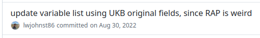
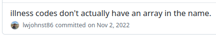

Integrating open and reproducible practices within a research organization
April 10, 2025
Who am I? 👋

- Team Leader, Steno Diabetes Center Aarhus and Aarhus University
- Current work:
- Teach how to do open and reproducible science
- Build research software, mainly around data management
- Design ways to enable open and reproducible science
Teaching work: 3 workshops in R
Software to simplify and automate research tasks
- Seedcase Project: Building FAIR, organized, and modern infrastructures for research data
Objective of this talk:
Share experiences and struggles of getting an organization to adopt more open and reproducible practices.
Three areas of focus: UK Biobank, DP-Next, community-building/using GitHub across Steno Aarhus
UK Biobank
Two main aims of this project
- To build up a process and workflow for effective collaboration that follows best practices and principles in openness, reproducibility, and scientific rigor.
- To build a community around a shared project at Steno Aarhus in order to create a better research culture …
Achieve by using many reproducible and open practices on sub-projects
- Fully reproducible analysis
- Version control
- Code-based extraction of data
- Code reviews throughout
- Publish protocol, preprint, and code
My personal aim: Automate/streamline many project organization/management tasks
UK Biobank and RAP a great opportunity to do reproducibility
- RAP = Research Analysis Platform from DNAnexus
- Clean, empty environment every time you start up
Biggest challenge: Working with RAP is a mess
Documentation was/is near to the lowest priority they had
… UK Biobank had to write their own guides
Extracting a subset of data was way too difficult
- Behaviour of some of their code changed.
- Nearly impossible to test out code locally.
- Would often fail without explanation when ran on their servers.


But finally created an R package to help others out
Next challenge: Reviewing code, which was enlightening
“It runs”, doesn’t mean it outputs what you think it does.
But also an immense amount of work and time
Basically done by only me
Pressure to publish and limited training = lower priority for reproducibility
Limited understanding or effective use of GitHub
PhD students and postdocs don’t get rewarded for getting it right, they get rewarded for publishing
I had to step back because it was burning me out
Important thing I learned: We desperately need TEAMS!
DP-Next
…developing a sustainably effective strategy for prevention of Type 2 Diabetes
Work package 1: Better research in less time and fewer resources
Lessons learned from UK Biobank experience
- Strong “top-down” approach
- Establish tech leads group
- Emphasize more training
- Have a clearer roadmap
Big challenges: Majority of researchers don’t know how to use GitHub
So: Lots of training and education needed
Community-building across Steno Aarhus
Rant a lot 📣 so people know the issues
Rant and repeat regularly, people start to listen 🤔
Rant so much, people start agreeing and working to resolve the rants! 🎉
Through the ranting, Steno Aarhus adopted using GitHub
At least for building websites and hosting material on projects
Initial reason to use GitHub: Place to store common documents 📝
Several project website being hosted there
UK Biobank sub-projects are managed through it
New challenges regularly 🙄
For example:
Training and education (uncertainty, anxiety)
Web accessibility misunderstandings
But having a community helps to not feel alone
To sum it up
Lessons learned
- We need more digitally-technical people in research!
- We need this work to be recognized and incentivised
- We need this work to be funded
- We need team science!
Implementing change…
Rant and don’t stop ranting!
(…while also working to improve things and providing solutions)
Licensed under CC-BY 4.0.
Slides at slides.lwjohnst.com